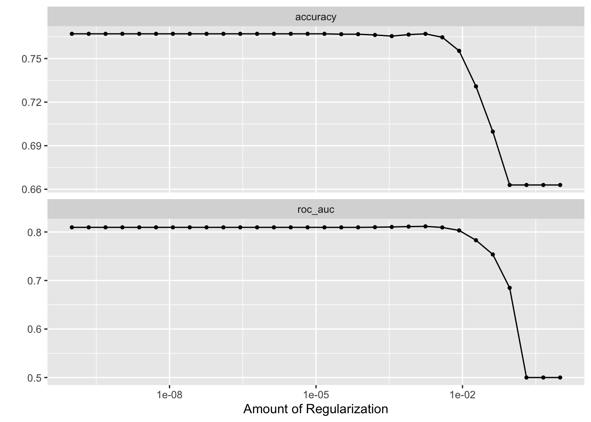

library(tidyverse)
library(easystats)
library(tidymodels)
library(tidytext)
library(textrecipes)
library(lsa) # stopwords
library(discrim) # naive bayes classification
library(naivebayes)
library(tictoc) # Zeitmessung
library(fastrtext) # Worteinbettungen
library(remoji) # Emojis
library(tokenizers) # Vektoren tokenisieren7 Klassifikation von Hatespeech
7.1 Vorab
7.1.1 Lernziele
- Sie können grundlegende Verfahren zur Klassifikation von Hatespeech einsetzen und erklären
7.1.2 Benötigte R-Pakete
7.2 Daten
Für Maschinenlernen brauchen wir Trainingsdaten, Daten also, bei denen wir pro Beobachtung der Wert der Zielvariablen kennen. Man spricht auch von “gelabelten” Daten.
Wir nutzen die Daten von Wiegand (2019a) bzw. Wiegand (2019b). Die Daten sind unter CC-By-4.0 Int. lizensiert.
d_raw <-
data_read("data/germeval2018.training.txt",
header = FALSE)Warning in data.table::fread(input = path, ...): Found and resolved improper
quoting out-of-sample. First healed line 111: <<"Edel sei der Mensch, hilfreich
und gut" - Nicht eine dieser Charaktereigenschaften kann Merkel für sich
beanspruchen. OTHER OTHER>>. If the fields are not quoted (e.g. field separator
does not appear within any field), try quote="" to avoid this warning.Die Daten finden sich auch im Paket pradadata.
Da die Daten keine Spaltenköpfe haben, informieren wir die Funktion dazu mit header = FALSE.
Benennen wir die die Spalten um:
names(d_raw) <- c("text", "c1", "c2")Dabei soll c1 und c2 für die 1. bzw. 2. Klassifikation stehen.
In c1 finden sich diese Werte:
d_raw %>%
count(c1)| c1 | n |
|---|---|
| OFFENSE | 1688 |
| OTHER | 3321 |
Hier wurde klassifiziert, ob beleidigende Sprache (offensive language) vorlag oder nicht (isch-etal-2021-overview?):
Task 1 was to decide whether a tweet includes some form of offensive language or not. The tweets had to be classified into the two classes OFFENSE and OTHER. The OFFENSE category covered abusive language, insults, as well as merely profane statements.
Und in c2 finden sich folgende Ausprägungen:
d_raw %>%
count(c2)| c2 | n |
|---|---|
| ABUSE | 1022 |
| INSULT | 595 |
| OTHER | 3321 |
| PROFANITY | 71 |
In c2 ging es um eine feinere Klassifikation beleidigender Sprache (isch-etal-2021-overview?):
The second task involved four categories, a nonoffensive OTHER class and three sub-categories of what is OFFENSE in Task 1. In the case of PROFANITY, profane words are used, however, the tweet does not want to insult anyone. This typically concerns the usage of swearwords (Scheiße, Fuck etc.) and cursing (Zur Hölle! Verdammt! etc.). This can be often found in youth language. Swearwords and cursing may, but need not, co-occur with insults or abusive speech. Profane language may in fact be used in tweets with positive sentiment to express emphasis. Whenever profane words are not directed towards a specific person or group of persons and there are no separate cues of INSULT or ABUSE, then tweets are labeled as simple cases of PROFANITY.
Sind Texte, die als OFFENSE klassifiziert sind, auch (fast) immer als ABUSE, INSULT oder PROFANITY klassifiziert?
d_raw %>%
filter(c1 == "OTHER", c2 == "OTHER") %>%
nrow() / nrow(d_raw)[1] 0.6630066In ca. 2/3 der Fälle wurden in beiden Klassifikation OTHER klassifiziert.
d_raw %>%
filter(c1 != "OTHER", c2 != "OTHER") %>%
nrow() / nrow(d_raw)[1] 0.3369934Entsprechend in ca. 1/3 der Fälle wurde jeweils nicht mit OTHER klassifiziert.
Wir begnügen uns hier mit der ersten, gröberen Klassifikation.
Fügen wir abschließend noch eine ID-Variable hinzu:
d1 <-
d_raw %>%
mutate(id = as.character(1:nrow(.)))Die ID-Variable definieren als Text (nicht als Integer), da die Twitter-IDs zwar natürliche Zahlen sind, aber zu groß, um von R als Integer verarbeitet zu werden. Faktisch sind sie für uns auch nur nominal skalierte Variablen, so dass wir keinen Informationsverlust haben.
#write_rds(d1, "objects/d1.rds")7.3 Feature Engineering
Reichern wir die Daten mit weiteren Features an, in der Hoffnung, damit eine bessere Klassifikation erzielen zu können.
7.3.1 Textlänge
d2 <-
d1 %>%
mutate(text_length = str_length(text))
head(d2)| text | c1 | c2 | id | text_length |
|---|---|---|---|---|
| (corinnamilborn?) Liebe Corinna, wir würden dich gerne als Moderatorin für uns gewinnen! Wärst du begeisterbar? | OTHER | OTHER | 1 | 109 |
| (Martin28a?) Sie haben ja auch Recht. Unser Tweet war etwas missverständlich. Dass das BVerfG Sachleistungen nicht ausschließt, kritisieren wir. | OTHER | OTHER | 2 | 142 |
| (ahrens_theo?) fröhlicher gruß aus der schönsten stadt der welt theo ⚓️ | OTHER | OTHER | 3 | 69 |
| (dushanwegner?) Amis hätten alles und jeden gewählt…nur Hillary wollten sie nicht und eine Fortsetzung von Obama-Politik erst recht nicht..! | OTHER | OTHER | 4 | 140 |
| (spdde?) kein verläßlicher Verhandlungspartner. Nachkarteln nach den Sondierzngsgesprächen - schickt diese Stümper #SPD in die Versenkung. | OFFENSE | INSULT | 5 | 136 |
| (Dirki_M?) Ja, aber wo widersprechen die Zahlen denn denen, die im von uns verlinkten Artikel stehen? In unserem Tweet geht es rein um subs. Geschützte. 2017 ist der gesamte Familiennachzug im Vergleich zu 2016 - die Zahlen, die Hr. Brandner bemüht - übrigens leicht rückläufig gewesen. | OTHER | OTHER | 6 | 284 |
7.3.2 Sentimentanalyse
Wir nutzen dazu SentiWS (Remus, Quasthoff, und Heyer 2010).
sentiws <- read_csv("https://osf.io/x89wq/?action=download")Rows: 3468 Columns: 4
── Column specification ────────────────────────────────────────────────────────
Delimiter: ","
chr (3): neg_pos, word, inflections
dbl (1): value
ℹ Use `spec()` to retrieve the full column specification for this data.
ℹ Specify the column types or set `show_col_types = FALSE` to quiet this message.d2_long <-
d2 %>%
unnest_tokens(input = text, output = token)
head(d2_long)| c1 | c2 | id | text_length | token |
|---|---|---|---|---|
| OTHER | OTHER | 1 | 109 | corinnamilborn |
| OTHER | OTHER | 1 | 109 | liebe |
| OTHER | OTHER | 1 | 109 | corinna |
| OTHER | OTHER | 1 | 109 | wir |
| OTHER | OTHER | 1 | 109 | würden |
| OTHER | OTHER | 1 | 109 | dich |
Jetzt filtern wir unsere Textdaten so, dass nur Wörter mit Sentimentwert übrig bleiben:
d2_long_senti <-
d2_long %>%
inner_join(sentiws %>% select(-inflections), by = c("token" = "word"))
head(d2_long)| c1 | c2 | id | text_length | token |
|---|---|---|---|---|
| OTHER | OTHER | 1 | 109 | corinnamilborn |
| OTHER | OTHER | 1 | 109 | liebe |
| OTHER | OTHER | 1 | 109 | corinna |
| OTHER | OTHER | 1 | 109 | wir |
| OTHER | OTHER | 1 | 109 | würden |
| OTHER | OTHER | 1 | 109 | dich |
Schließlich berechnen wir die Sentimentwert pro Polarität und pro Tweet:
d2_sentis <-
d2_long_senti %>%
group_by(id, neg_pos) %>%
summarise(senti_avg = mean(value))`summarise()` has grouped output by 'id'. You can override using the `.groups`
argument.head(d2_sentis)| id | neg_pos | senti_avg |
|---|---|---|
| 1 | pos | 0.0040 |
| 1012 | neg | -0.2087 |
| 1013 | neg | -0.0420 |
| 1015 | neg | -0.0048 |
| 1021 | pos | 0.0845 |
| 1024 | neg | -0.4787 |
Diese Tabelle bringen wir wieder eine breitere Form, um sie dann wieder mit den Hauptdaten zu vereinigen.
d2_sentis_wide <-
d2_sentis %>%
pivot_wider(names_from = "neg_pos", values_from = "senti_avg")
d2_sentis_wide %>% head()| id | pos | neg |
|---|---|---|
| 1 | 0.0040 | NA |
| 1012 | NA | -0.2087 |
| 1013 | NA | -0.0420 |
| 1015 | NA | -0.0048 |
| 1021 | 0.0845 | NA |
| 1024 | 0.0040 | -0.4787 |
d3 <-
d2 %>%
full_join(d2_sentis_wide)Joining, by = "id"head(d3)| text | c1 | c2 | id | text_length | pos | neg |
|---|---|---|---|---|---|---|
| (corinnamilborn?) Liebe Corinna, wir würden dich gerne als Moderatorin für uns gewinnen! Wärst du begeisterbar? | OTHER | OTHER | 1 | 109 | 0.004 | NA |
| (Martin28a?) Sie haben ja auch Recht. Unser Tweet war etwas missverständlich. Dass das BVerfG Sachleistungen nicht ausschließt, kritisieren wir. | OTHER | OTHER | 2 | 142 | NA | -0.3466 |
| (ahrens_theo?) fröhlicher gruß aus der schönsten stadt der welt theo ⚓️ | OTHER | OTHER | 3 | 69 | NA | NA |
| (dushanwegner?) Amis hätten alles und jeden gewählt…nur Hillary wollten sie nicht und eine Fortsetzung von Obama-Politik erst recht nicht..! | OTHER | OTHER | 4 | 140 | NA | NA |
| (spdde?) kein verläßlicher Verhandlungspartner. Nachkarteln nach den Sondierzngsgesprächen - schickt diese Stümper #SPD in die Versenkung. | OFFENSE | INSULT | 5 | 136 | NA | NA |
| (Dirki_M?) Ja, aber wo widersprechen die Zahlen denn denen, die im von uns verlinkten Artikel stehen? In unserem Tweet geht es rein um subs. Geschützte. 2017 ist der gesamte Familiennachzug im Vergleich zu 2016 - die Zahlen, die Hr. Brandner bemüht - übrigens leicht rückläufig gewesen. | OTHER | OTHER | 6 | 284 | 0.004 | -0.2042 |
Hinweis
Die Sentimentanalyse hier vernachlässigt Flexionen der Wörter. Der Autor fühlt den Drang zu schreiben: “Left as an exercise for the reader” :-)
7.3.3 Schimpfwörter
Zählen wir die Schimpfwörter pro Text. Dazu nutzen wir die Daten von LDNOOBW, lizensiert nach CC-BY-4.0-Int.
schimpf1 <- data_read("https://raw.githubusercontent.com/LDNOOBW/List-of-Dirty-Naughty-Obscene-and-Otherwise-Bad-Words/master/de", format = ",", header = FALSE)Reading data...Preparing data... Almost there!Länger aber noch ist die Liste aus dem InsultWiki, lizensiert CC0.
schimpf2 <-
data_read("data/insult-de.txt", header = FALSE) %>%
mutate_all(str_to_lower)Die Daten finden sich auch im Paket pradadata.
Binden wir die Listen zusammen:
schimpf <-
schimpf1 %>%
bind_rows(schimpf2) %>%
distinct() %>%
rename(word = "V1")
nrow(schimpf)[1] 6208Um die Lesis vor (unnötiger?) Kopfverschmutzung zu bewahren, sind diese Schimpfwörter hier nicht abgedruckt.
Jetzt zählen wir, ob unsere Tweets/Texte solcherlei Wörter enthalten.
d_schimpf <-
d2_long %>%
select(id, token) %>%
mutate(schimpf = token %in% schimpf$word)Wie viele Schimpfwörter haben wir gefunden?
d_schimpf %>%
count(schimpf)| schimpf | n |
|---|---|
| FALSE | 99081 |
| TRUE | 1136 |
Etwa ein Prozent der Wörter sind Schimpfwörter in unserem Corpus.
d_schimpf2 <-
d_schimpf %>%
group_by(id) %>%
summarise(schimpf_n = sum(schimpf))
head(d_schimpf2)| id | schimpf_n |
|---|---|
| 1 | 0 |
| 10 | 0 |
| 100 | 0 |
| 1000 | 0 |
| 1001 | 0 |
| 1002 | 0 |
d_main <-
d3 %>%
full_join(d_schimpf2)Joining, by = "id"
Wichtig
Namen wie final, main oder result sind gefährlich, da es unter Garantie ein “final-final geben wird, oder der”Haupt-Datensat” plötzlich nicht mehr so wichtig erscheint und so weiter.
7.3.4 Emojis
emj <- emoji(list_emoji(), pad = FALSE)
head(emj)[1] "😄" "😃" "😀" "😊" "☺️" "😉"Diese Liste umfasst knapp 900 Emojis, das sind allerdings noch nicht alle, die es gibt. Diese Liste umfasst mit gut 1800 Emojis gut das Doppelte.
Selbstkuratierte Liste an “wilden” Emoji; diese Liste ist inspiriert von emojicombos.com.
wild_emojis <-
c(
emoji(find_emoji("gun")),
emoji(find_emoji("bomb")),
emoji(find_emoji("fist")),
emoji(find_emoji("knife"))[1],
emoji(find_emoji("ambulance")),
emoji(find_emoji("fist")),
emoji(find_emoji("skull")),
"☠️", "🗑", "😠", "👹", "💩" ,
"🖕", "👎️",
emoji(find_emoji("middle finger")), "😡", "🤢", "🤮",
"😖", "😣", "😩", "😨", "😝", "😳", "😬", "😱", "😵",
"😤", "🤦♀️", "🤦"
)wild_emojis_df <-
tibble(emoji = wild_emojis)
save(wild_emojis_df, file = "data/wild_emojis.RData")Auf dieser Basis können wir einen Prädiktor erstellen, der zählt, ob ein Tweet einen oder mehrere der “wilden” Emojis enthält.
7.4 Workflow 1: Rezept 1 + Naive-Bayes
7.4.1 Dummy-Rezept
Hier ist ein einfaches Beispiel, um die Textvorbereitung mit {textrecipes} zu verdeutlichen.
Wir erstellen uns einen Dummy-Text:
dummy <-
tibble(text = c("Ich gehe heim und der die das nicht in ein and the"))Dann tokenisieren wir den Text:
rec_dummy <-
recipe(text ~ 1, data = dummy) %>%
step_tokenize(text)
rec_dummyRecipe
Inputs:
role #variables
outcome 1
Operations:
Tokenization for textDie Tokens kann man sich so zeigen lassen:
show_tokens(rec_dummy, text)[[1]]
[1] "ich" "gehe" "heim" "und" "der" "die" "das" "nicht" "in"
[10] "ein" "and" "the" Jetzt entfernen wir die Stopwörter deutscher Sprache; dafür nutzen wir die Stopwort-Quelle snowball:
rec_dummy <-
recipe(text ~ 1, data = dummy) %>%
step_tokenize(text) %>%
step_stopwords(text, language = "de", stopword_source = "snowball")
rec_dummyRecipe
Inputs:
role #variables
outcome 1
Operations:
Tokenization for text
Stop word removal for textPrüfen wir die Tokens; sind die Stopwörter wirklich entfernt?
show_tokens(rec_dummy, text)[[1]]
[1] "gehe" "heim" "and" "the" Ja, die deutschen Stopwörter sind entfernt. Die englischen nicht; das macht Sinn!
7.4.2 Datenaufteilung
d_split <- initial_split(d_main, strata = c1)
d_train <- training(d_split)
d_test <- testing(d_split)7.4.3 Rezept 1
Rezept definieren:
rec1 <-
recipe(c1 ~ ., data = select(d_train, text, c1, id)) %>%
update_role(id, new_role = "id") %>%
step_tokenize(text) %>%
step_stopwords(text, language = "de", stopword_source = "snowball") %>%
step_stem(text) %>%
step_tokenfilter(text, max_tokens = 1e2) %>%
step_tfidf(text) %>%
step_normalize(all_numeric_predictors())
rec1Recipe
Inputs:
role #variables
id 1
outcome 1
predictor 1
Operations:
Tokenization for text
Stop word removal for text
Stemming for text
Text filtering for text
Term frequency-inverse document frequency with text
Centering and scaling for all_numeric_predictors()Preppen:
rec1_prepped <- prep(rec1)Und backen:
d_rec1 <- bake(rec1_prepped, new_data = NULL)
head(d_rec1)| id | c1 | tfidf_text__macmik | tfidf_text_2 | tfidf_text_ab | tfidf_text_afd | tfidf_text_amp | tfidf_text_anna_iina | tfidf_text_athinamala | tfidf_text_beim | tfidf_text_besser | tfidf_text_bild | tfidf_text_cdu | tfidf_text_charlie_silv | tfidf_text_d | tfidf_text_dafür | tfidf_text_dank | tfidf_text_dass | tfidf_text_deutsch | tfidf_text_deutschen | tfidf_text_deutschland | tfidf_text_dumm | tfidf_text_eigentlich | tfidf_text_einfach | tfidf_text_ellibisathid | tfidf_text_endlich | tfidf_text_ennof_ | tfidf_text_erst | tfidf_text_eu | tfidf_text_europa | tfidf_text_feldenfrizz | tfidf_text_focusonlin | tfidf_text_frage | tfidf_text_frau | tfidf_text_ganz | tfidf_text_geht | tfidf_text_genau | tfidf_text_gerad | tfidf_text_gibt | tfidf_text_grünen | tfidf_text_gt | tfidf_text_gut | tfidf_text_heut | tfidf_text_immer | tfidf_text_info2099 | tfidf_text_islam | tfidf_text_israel | tfidf_text_ja | tfidf_text_jahr | tfidf_text_klar | tfidf_text_kommt | tfidf_text_krippmari | tfidf_text_land | tfidf_text_lassen | tfidf_text_lbr | tfidf_text_leben | tfidf_text_leider | tfidf_text_lifetrend | tfidf_text_link | tfidf_text_macht | tfidf_text_machtjanix23 | tfidf_text_mal | tfidf_text_md_franz | tfidf_text_mehr | tfidf_text_menschen | tfidf_text_merkel | tfidf_text_miriamozen | tfidf_text_moslem | tfidf_text_müssen | tfidf_text_nancypeggymandi | tfidf_text_nasanas | tfidf_text_noherrman | tfidf_text_norbinator2403 | tfidf_text_petpanther0 | tfidf_text_politik | tfidf_text_recht | tfidf_text_richtig | tfidf_text_schmiddiemaik | tfidf_text_schon | tfidf_text_schulz | tfidf_text_seit | tfidf_text_sicher | tfidf_text_sollten | tfidf_text_spd | tfidf_text_tagesschau | tfidf_text_thomasgbau | tfidf_text_troll_putin | tfidf_text_trump | tfidf_text_tun | tfidf_text_u | tfidf_text_unser | tfidf_text_viel | tfidf_text_volk | tfidf_text_wäre | tfidf_text_warum | tfidf_text_welt | tfidf_text_wer | tfidf_text_willjrosenblatt | tfidf_text_wissen | tfidf_text_wohl | tfidf_text_wurd | tfidf_text_zeit |
|---|---|---|---|---|---|---|---|---|---|---|---|---|---|---|---|---|---|---|---|---|---|---|---|---|---|---|---|---|---|---|---|---|---|---|---|---|---|---|---|---|---|---|---|---|---|---|---|---|---|---|---|---|---|---|---|---|---|---|---|---|---|---|---|---|---|---|---|---|---|---|---|---|---|---|---|---|---|---|---|---|---|---|---|---|---|---|---|---|---|---|---|---|---|---|---|---|---|---|---|---|---|
| 7 | OFFENSE | -0.1478606 | -0.1017932 | -0.1030146 | -0.157801 | -0.1237411 | -0.1069335 | -0.1421622 | -0.0952091 | -0.0970237 | -0.0999172 | -0.1136532 | -0.1446274 | -0.1331066 | -0.0923332 | -0.1187328 | -0.1907487 | -0.1557646 | -0.1525502 | -0.2023399 | -0.1038507 | -0.0936705 | -0.117269 | -0.1107154 | -0.0994985 | -0.113482 | -0.114578 | -0.115141 | -0.1053888 | -0.1478606 | -0.1057552 | -0.0935953 | -0.0936319 | -0.1104678 | 3.9532756 | -0.0973827 | -0.1010069 | -0.1637995 | -0.1014353 | -0.0912218 | -0.1176659 | 2.8693459 | -0.1583496 | -0.080984 | -0.1109831 | -0.0896051 | -0.170903 | -0.0974452 | -0.1010331 | -0.1001024 | -0.1374319 | -0.1395844 | -0.1036183 | -0.4078297 | -0.0885768 | -0.0958063 | -0.1433179 | -0.0988073 | -0.1261982 | -0.1072451 | -0.1802804 | -0.1309638 | -0.1873138 | -0.1223844 | -0.2228536 | -0.1091668 | -0.0953965 | -0.134878 | -0.1110202 | -0.1191285 | -0.093113 | -0.0604024 | -0.0923776 | -0.1481462 | -0.1196747 | -0.1059602 | -0.1414784 | -0.1940836 | -0.098983 | -0.1269244 | -0.0922149 | -0.098992 | -0.1349804 | -0.1009173 | -0.1416992 | -0.1174202 | -0.1083908 | -0.1038686 | -0.1535957 | -0.1537918 | -0.1004169 | -0.1119121 | -0.1188893 | -0.1068939 | -0.1496574 | -0.1548429 | -0.1414784 | -0.0910888 | -0.106692 | -0.1127138 | 5.9093440 |
| 9 | OFFENSE | -0.1478606 | -0.1017932 | -0.1030146 | 5.670118 | -0.1237411 | -0.1069335 | -0.1421622 | -0.0952091 | -0.0970237 | -0.0999172 | -0.1136532 | -0.1446274 | -0.1331066 | -0.0923332 | -0.1187328 | -0.1907487 | -0.1557646 | -0.1525502 | -0.2023399 | -0.1038507 | -0.0936705 | -0.117269 | -0.1107154 | -0.0994985 | -0.113482 | -0.114578 | -0.115141 | -0.1053888 | -0.1478606 | -0.1057552 | -0.0935953 | -0.0936319 | -0.1104678 | -0.1465598 | -0.0973827 | -0.1010069 | -0.1637995 | -0.1014353 | -0.0912218 | -0.1176659 | -0.1701938 | -0.1583496 | -0.080984 | -0.1109831 | -0.0896051 | -0.170903 | -0.0974452 | -0.1010331 | -0.1001024 | -0.1374319 | -0.1395844 | -0.1036183 | -0.4078297 | -0.0885768 | -0.0958063 | -0.1433179 | -0.0988073 | -0.1261982 | -0.1072451 | -0.1802804 | -0.1309638 | -0.1873138 | -0.1223844 | -0.2228536 | -0.1091668 | -0.0953965 | -0.134878 | -0.1110202 | -0.1191285 | -0.093113 | -0.0604024 | -0.0923776 | -0.1481462 | -0.1196747 | -0.1059602 | -0.1414784 | -0.1940836 | -0.098983 | -0.1269244 | -0.0922149 | -0.098992 | -0.1349804 | 9.1018767 | -0.1416992 | -0.1174202 | -0.1083908 | -0.1038686 | -0.1535957 | -0.1537918 | -0.1004169 | -0.1119121 | -0.1188893 | -0.1068939 | -0.1496574 | -0.1548429 | -0.1414784 | -0.0910888 | -0.106692 | -0.1127138 | -0.1048312 |
| 10 | OFFENSE | -0.1478606 | -0.1017932 | -0.1030146 | -0.157801 | -0.1237411 | -0.1069335 | -0.1421622 | -0.0952091 | -0.0970237 | -0.0999172 | -0.1136532 | -0.1446274 | -0.1331066 | -0.0923332 | -0.1187328 | -0.1907487 | 11.0326231 | -0.1525502 | -0.2023399 | -0.1038507 | -0.0936705 | -0.117269 | -0.1107154 | -0.0994985 | -0.113482 | -0.114578 | -0.115141 | -0.1053888 | -0.1478606 | -0.1057552 | -0.0935953 | -0.0936319 | -0.1104678 | -0.1465598 | -0.0973827 | -0.1010069 | -0.1637995 | -0.1014353 | -0.0912218 | -0.1176659 | -0.1701938 | -0.1583496 | -0.080984 | -0.1109831 | -0.0896051 | -0.170903 | -0.0974452 | -0.1010331 | -0.1001024 | -0.1374319 | -0.1395844 | -0.1036183 | -0.4078297 | -0.0885768 | -0.0958063 | -0.1433179 | -0.0988073 | -0.1261982 | -0.1072451 | -0.1802804 | -0.1309638 | -0.1873138 | -0.1223844 | -0.2228536 | -0.1091668 | -0.0953965 | -0.134878 | -0.1110202 | -0.1191285 | -0.093113 | -0.0604024 | -0.0923776 | -0.1481462 | -0.1196747 | -0.1059602 | -0.1414784 | -0.1940836 | -0.098983 | -0.1269244 | -0.0922149 | -0.098992 | -0.1349804 | -0.1009173 | -0.1416992 | -0.1174202 | -0.1083908 | -0.1038686 | -0.1535957 | -0.1537918 | -0.1004169 | -0.1119121 | -0.1188893 | -0.1068939 | -0.1496574 | -0.1548429 | -0.1414784 | -0.0910888 | -0.106692 | -0.1127138 | -0.1048312 |
| 12 | OFFENSE | -0.1478606 | -0.1017932 | -0.1030146 | -0.157801 | -0.1237411 | -0.1069335 | -0.1421622 | -0.0952091 | -0.0970237 | -0.0999172 | -0.1136532 | -0.1446274 | -0.1331066 | -0.0923332 | -0.1187328 | -0.1907487 | -0.1557646 | -0.1525502 | -0.2023399 | -0.1038507 | -0.0936705 | -0.117269 | -0.1107154 | -0.0994985 | -0.113482 | -0.114578 | -0.115141 | -0.1053888 | -0.1478606 | -0.1057552 | -0.0935953 | -0.0936319 | -0.1104678 | -0.1465598 | -0.0973827 | -0.1010069 | -0.1637995 | -0.1014353 | -0.0912218 | -0.1176659 | -0.1701938 | 3.7091315 | -0.080984 | -0.1109831 | -0.0896051 | 3.511705 | -0.0974452 | -0.1010331 | -0.1001024 | -0.1374319 | -0.1395844 | -0.1036183 | 1.2316433 | -0.0885768 | -0.0958063 | -0.1433179 | -0.0988073 | -0.1261982 | -0.1072451 | -0.1802804 | -0.1309638 | -0.1873138 | -0.1223844 | -0.2228536 | -0.1091668 | -0.0953965 | -0.134878 | -0.1110202 | -0.1191285 | -0.093113 | -0.0604024 | -0.0923776 | -0.1481462 | -0.1196747 | -0.1059602 | -0.1414784 | -0.1940836 | -0.098983 | -0.1269244 | -0.0922149 | -0.098992 | -0.1349804 | -0.1009173 | -0.1416992 | -0.1174202 | -0.1083908 | -0.1038686 | -0.1535957 | -0.1537918 | -0.1004169 | -0.1119121 | -0.1188893 | -0.1068939 | -0.1496574 | -0.1548429 | -0.1414784 | -0.0910888 | -0.106692 | -0.1127138 | -0.1048312 |
| 17 | OFFENSE | -0.1478606 | -0.1017932 | -0.1030146 | -0.157801 | -0.1237411 | -0.1069335 | -0.1421622 | -0.0952091 | -0.0970237 | -0.0999172 | -0.1136532 | -0.1446274 | -0.1331066 | -0.0923332 | -0.1187328 | -0.1907487 | -0.1557646 | 3.8058985 | -0.2023399 | -0.1038507 | -0.0936705 | -0.117269 | -0.1107154 | -0.0994985 | -0.113482 | -0.114578 | -0.115141 | -0.1053888 | -0.1478606 | -0.1057552 | -0.0935953 | -0.0936319 | -0.1104678 | -0.1465598 | -0.0973827 | -0.1010069 | -0.1637995 | -0.1014353 | -0.0912218 | -0.1176659 | -0.1701938 | -0.1583496 | -0.080984 | -0.1109831 | -0.0896051 | -0.170903 | -0.0974452 | -0.1010331 | -0.1001024 | -0.1374319 | -0.1395844 | -0.1036183 | -0.4078297 | -0.0885768 | -0.0958063 | -0.1433179 | -0.0988073 | -0.1261982 | -0.1072451 | -0.1802804 | -0.1309638 | -0.1873138 | -0.1223844 | -0.2228536 | -0.1091668 | -0.0953965 | -0.134878 | -0.1110202 | -0.1191285 | -0.093113 | -0.0604024 | -0.0923776 | 4.3487918 | -0.1196747 | -0.1059602 | -0.1414784 | -0.1940836 | -0.098983 | 4.6618704 | -0.0922149 | -0.098992 | -0.1349804 | -0.1009173 | -0.1416992 | -0.1174202 | -0.1083908 | -0.1038686 | -0.1535957 | -0.1537918 | -0.1004169 | -0.1119121 | -0.1188893 | -0.1068939 | -0.1496574 | -0.1548429 | -0.1414784 | -0.0910888 | -0.106692 | -0.1127138 | -0.1048312 |
| 33 | OFFENSE | -0.1478606 | -0.1017932 | -0.1030146 | -0.157801 | -0.1237411 | -0.1069335 | -0.1421622 | -0.0952091 | -0.0970237 | -0.0999172 | -0.1136532 | -0.1446274 | -0.1331066 | -0.0923332 | -0.1187328 | -0.1907487 | 3.5736979 | -0.1525502 | -0.2023399 | -0.1038507 | -0.0936705 | -0.117269 | -0.1107154 | -0.0994985 | -0.113482 | -0.114578 | -0.115141 | -0.1053888 | -0.1478606 | -0.1057552 | -0.0935953 | -0.0936319 | -0.1104678 | -0.1465598 | -0.0973827 | -0.1010069 | -0.1637995 | -0.1014353 | -0.0912218 | -0.1176659 | -0.1701938 | -0.1583496 | -0.080984 | -0.1109831 | -0.0896051 | -0.170903 | -0.0974452 | -0.1010331 | -0.1001024 | -0.1374319 | -0.1395844 | -0.1036183 | -0.4078297 | -0.0885768 | -0.0958063 | -0.1433179 | -0.0988073 | -0.1261982 | -0.1072451 | -0.1802804 | -0.1309638 | 2.9994252 | -0.1223844 | -0.2228536 | -0.1091668 | 6.1140871 | -0.134878 | -0.1110202 | -0.1191285 | -0.093113 | -0.0604024 | -0.0923776 | -0.1481462 | -0.1196747 | -0.1059602 | -0.1414784 | -0.1940836 | -0.098983 | -0.1269244 | -0.0922149 | -0.098992 | -0.1349804 | -0.1009173 | -0.1416992 | -0.1174202 | -0.1083908 | -0.1038686 | -0.1535957 | -0.1537918 | -0.1004169 | -0.1119121 | -0.1188893 | -0.1068939 | -0.1496574 | -0.1548429 | -0.1414784 | -0.0910888 | -0.106692 | -0.1127138 | -0.1048312 |
7.4.4 Modellspezifikation 1
Wir definiere einen Naive-Bayes-Algorithmus:
nb_spec <- naive_Bayes() %>%
set_mode("classification") %>%
set_engine("naivebayes")
nb_specNaive Bayes Model Specification (classification)
Computational engine: naivebayes Und setzen auf die klassische zehnfache Kreuzvalidierung.
set.seed(42)
folds1 <- vfold_cv(d_train)7.4.5 Workflow 1
wf1 <-
workflow() %>%
add_recipe(rec1) %>%
add_model(nb_spec)
wf1══ Workflow ════════════════════════════════════════════════════════════════════
Preprocessor: Recipe
Model: naive_Bayes()
── Preprocessor ────────────────────────────────────────────────────────────────
6 Recipe Steps
• step_tokenize()
• step_stopwords()
• step_stem()
• step_tokenfilter()
• step_tfidf()
• step_normalize()
── Model ───────────────────────────────────────────────────────────────────────
Naive Bayes Model Specification (classification)
Computational engine: naivebayes 7.4.6 Fitting 1
fit1 <-
fit_resamples(
wf1,
folds1,
control = control_resamples(save_pred = TRUE)
)Die Vorhersagen speichern wir ab, um die Performanz in den Faltungen des Hold-out-Samples zu berechnen.
Möchte man sich die Zeit sparen, die Syntax wieder durchlaufen zu lassen, kann man das Objekt speichern. Aber Vorsicht: Dabei kann es passieren, dass man mit veralteten Objekten arbeitet.
#write_rds(fit1, "objects/chap_classific_fit1.rds")7.4.7 Performanz 1
wf1_performance <-
collect_metrics(fit1)
wf1_performancewf_preds <-
collect_predictions(fit1)
wf_preds %>%
group_by(id) %>%
roc_curve(truth = c1, .pred_OFFENSE) %>%
autoplot()
conf_mat_resampled(fit1, tidy = FALSE) %>% autoplot(type = “heatmap”)
conf_mat_resampled(fit1, tidy = FALSE) %>%
autoplot(type = "heatmap")
7.5 Nullmodell
null_classification <-
parsnip::null_model() %>%
set_engine("parsnip") %>%
set_mode("classification")
null_rs <- workflow() %>%
add_recipe(rec1) %>%
add_model(null_classification) %>%
fit_resamples(
folds1
)Hier ist die Performanz des Nullmodells.
null_rs %>%
collect_metrics()show_best(null_rs)Warning: No value of `metric` was given; metric 'roc_auc' will be used.| penalty | .metric | .estimator | mean | n | std_err | .config |
|---|---|---|---|---|---|---|
| 0.0017433 | roc_auc | binary | 0.8116297 | 10 | 0.0087106 | Preprocessor1_Model22 |
| 0.0007880 | roc_auc | binary | 0.8111630 | 10 | 0.0089414 | Preprocessor1_Model21 |
| 0.0003562 | roc_auc | binary | 0.8103737 | 10 | 0.0092381 | Preprocessor1_Model20 |
| 0.0001610 | roc_auc | binary | 0.8099159 | 10 | 0.0094448 | Preprocessor1_Model19 |
| 0.0000000 | roc_auc | binary | 0.8095907 | 10 | 0.0096029 | Preprocessor1_Model01 |
7.6 Workflow 2: Rezept 1 + Lasso
lasso_spec <- logistic_reg(penalty = tune(), mixture = 1) %>%
set_mode("classification") %>%
set_engine("glmnet")
lasso_specLogistic Regression Model Specification (classification)
Main Arguments:
penalty = tune()
mixture = 1
Computational engine: glmnet Wir definieren die Ausprägungen von penalty, die wir ausprobieren wollen:
lambda_grid <- grid_regular(penalty(), levels = 3) # hier nur 3 Werte, um Rechenzeit zu sparenwf2 <-
workflow() %>%
add_recipe(rec1) %>%
add_model(lasso_spec)
wf2══ Workflow ════════════════════════════════════════════════════════════════════
Preprocessor: Recipe
Model: logistic_reg()
── Preprocessor ────────────────────────────────────────────────────────────────
6 Recipe Steps
• step_tokenize()
• step_stopwords()
• step_stem()
• step_tokenfilter()
• step_tfidf()
• step_normalize()
── Model ───────────────────────────────────────────────────────────────────────
Logistic Regression Model Specification (classification)
Main Arguments:
penalty = tune()
mixture = 1
Computational engine: glmnet Tunen und Fitten:
set.seed(42)
fit2 <-
tune_grid(
wf2,
folds1,
grid = lambda_grid,
control = control_resamples(save_pred = TRUE)
)
fit2Vorsicht beim Abspeichern.
#write_rds(fit2, "objects/chap_classific_fit2.rds")Hier ist die Performanz:
collect_metrics(fit2) %>%
filter(.metric == "roc_auc") %>%
slice_max(mean, n = 3)autoplot(fit2)
fit2 %>%
show_best("roc_auc")| penalty | .metric | .estimator | mean | n | std_err | .config |
|---|---|---|---|---|---|---|
| 0 | roc_auc | binary | 0.5997476 | 10 | 0.0090575 | Preprocessor1_Model01 |
| 0 | roc_auc | binary | 0.5997476 | 10 | 0.0090575 | Preprocessor1_Model02 |
| 0 | roc_auc | binary | 0.5997476 | 10 | 0.0090575 | Preprocessor1_Model03 |
| 0 | roc_auc | binary | 0.5997476 | 10 | 0.0090575 | Preprocessor1_Model04 |
| 0 | roc_auc | binary | 0.5997476 | 10 | 0.0090575 | Preprocessor1_Model05 |
chosen_auc <-
fit2 %>%
select_by_one_std_err(metric = "roc_auc", -penalty)Finalisieren:
wf2_final <-
finalize_workflow(wf2, chosen_auc)
wf2_final══ Workflow ════════════════════════════════════════════════════════════════════
Preprocessor: Recipe
Model: logistic_reg()
── Preprocessor ────────────────────────────────────────────────────────────────
6 Recipe Steps
• step_tokenize()
• step_stopwords()
• step_stem()
• step_tokenfilter()
• step_tfidf()
• step_normalize()
── Model ───────────────────────────────────────────────────────────────────────
Logistic Regression Model Specification (classification)
Main Arguments:
penalty = 0.00853167852417281
mixture = 1
Computational engine: glmnet fit2_final_train <-
fit(wf2_final, d_train)fit2_final_train %>%
extract_fit_parsnip() %>%
tidy() %>%
arrange(-abs(estimate)) %>%
head()Loading required package: Matrix
Attaching package: 'Matrix'The following objects are masked from 'package:tidyr':
expand, pack, unpackLoaded glmnet 4.1-6| term | estimate | penalty |
|---|---|---|
| (Intercept) | 0.7002844 | 0.0085317 |
| tfidf_text_merkel | -0.2356021 | 0.0085317 |
| tfidf_text_dumm | -0.1908203 | 0.0085317 |
| tfidf_text_lbr | -0.1468066 | 0.0085317 |
| tfidf_text_moslem | -0.1442941 | 0.0085317 |
| tfidf_text_dank | 0.1295210 | 0.0085317 |
fit2_final_test <-
last_fit(wf2_final, d_split)
collect_metrics(fit2_final_test)| .metric | .estimator | .estimate | .config |
|---|---|---|---|
| accuracy | binary | 0.6855547 | Preprocessor1_Model1 |
| roc_auc | binary | 0.6448264 | Preprocessor1_Model1 |
7.6.1 Vorhersage
7.6.2 Vohersagedaten
Pfad zu den Daten:
tweet_data_path <- "/Users/sebastiansaueruser/github-repos/hate-speech/data-raw/tweets/"tweet_data_files_names <- list.files(path = tweet_data_path,
pattern = "tweets-to-.*\\.rds$")
head(tweet_data_files_names)character(0)Wie viele Dateien sind es?
length(tweet_data_files_names)[1] 0Wir geben den Elementen des Vektors gängige Namen, das hilft uns gleich bei map:
names(tweet_data_files_names) <- str_remove(tweet_data_files_names, "\\.rds")OK, weiter: So können wir eine der Datendateien einlesen:
d_raw <-
read_rds(file = paste0(tweet_data_path, tweet_data_files_names[1]))
d <-
d_raw %>%
select(id, author_id, created_at, public_metrics) %>%
unnest_wider(public_metrics)
head(d)Und so lesen wir alle ein:
Zunächst erstellen wir uns eine Helper-Funktion:
read_and_select <- function(file_name, path_to_tweet_data = tweet_data_path) {
out <-
read_rds(file = paste0(path_to_tweet_data, file_name)) %>%
select(id, author_id, created_at, text, public_metrics) %>%
unnest_wider(public_metrics)
cat("Data file was read.\n")
return(out)
}Testen:
d1 <- read_and_select(tweet_data_files_names[1])
head(d1)Die Funktion read_and_select mappen wir auf alle Datendateien:
tic()
ds <-
tweet_data_files_names %>%
map_dfr(read_and_select, .id = "dataset")
toc()214.531 sec elapsed
Da wir den Elementen von tweet_data_files_names Namen gegeben haben, finden wir diese Namen praktischerweise wieder in ds.
Vielleicht ist es zum Entwickeln besser, mit einem kleineren Datensatz einstweilen zu arbeiten:
ds_short <- read_rds(file = "/Users/sebastiansaueruser/datasets/Twitter/hate-classific/ds_short.rds")
ds <- ds_short7.6.3 Vokabular erstellen
ds_long <-
ds %>%
select(text) %>%
unnest_tweets(input = text, output = word)Puh, das hat gedauert!
Speichern wir uns diese Daten daher auf die Festplatte:
#write_rds(ds_long, file = paste0(tweet_data_path, "ds_long.rds"))Entfernen wir daraus die Duplikate, um uns ein Vokabular zu erstellen:
ds_voc <-
ds_long %>%
distinct(word)Und das resultierende Objekt speichern wir wieder ab:
#write_rds(ds_voc, file = paste0("objects/", "ds_voc.rds"))7.7 Worteinbettungen erstellen
7.7.1 FastText-Modell
Definiere die Konstanten für das fastText-Modell:
texts <- ds %>% pull(text)
texts <- tolower(texts)out_file_txt <- "/Users/sebastiansaueruser/datasets/Twitter/twitter-polit-model.vec"
out_file_model <- "/Users/sebastiansaueruser/datasets/Twitter/twitter-polit-model.bin"
file.exists(out_file_txt)[1] TRUEfile.exists(out_file_model)[1] TRUE#writeLines(text = texts, con = out_file_txt)
#execute(commands = c("skipgram", "-input", tmp_file_txt, "-output", out_file_model, "-verbose", 1))Read 22M words
Number of words: 130328
Number of labels: 0
Progress: 100.0% words/sec/thread: 49218 lr: 0.000000 avg.loss: 1.720812 ETA: 0h 0m 0sJetzt laden wir das Modell von der Festplatte:
twitter_fasttext_model <- load_model(out_file_model)
dict <- get_dictionary(twitter_fasttext_model)Schauen wir uns einige Begriffe aus dem Vokabular an:
print(head(dict, 10)) [1] "</s>" "die" "und" "der"
[5] "sie" "das" "nicht" "in"
[9] "ist" "@_friedrichmerz"Hier sind die ersten paar Elemente des Vektors für menschen:
get_word_vectors(twitter_fasttext_model, c("menschen")) %>% `[`(1:10) [1] 0.14156282 0.44875699 0.23911817 -0.02580349 0.29811972 0.03870077
[7] 0.06518744 0.22527063 0.28198120 0.39931887Erstellen wir uns einen Tibble, der als erste Spalte das Vokabular und in den übrigen 100 Spalten die Dimensionen enthält:
word_embedding_twitter <-
tibble(
word = dict
)words_vecs_twitter <-
get_word_vectors(twitter_fasttext_model)word_embedding_twitter <-
word_embedding_twitter %>%
bind_cols(words_vecs_twitter)
names(word_embedding_twitter) <- c("word", paste0("v", sprintf("%03d", 1:100))) # Namen verschönernUnd als Worteinbettungs-Datei abspeichern:
#write_rds(word_embedding_twitter, file = paste0(tweet_data_path, "word_embedding_twitter.rds"))7.7.2 Aufbereiten
Am besten nur die Spalten behalten, die wir zum Modellieren nutzen:
ds_short2 <-
ds_short %>%
select(text, id)Dann backen wir die Daten mit dem vorhandenen Rezept:
ds_baked <- bake(rec1_prepped, new_data = ds_short2)Ist das nicht komfortabel? Das Textrezept übernimmt die Arbeit für uns, mit den richtigen Features zu arbeiten, die tf-idfs für die richtigen Tokens zu berechnen.
Wer dem Frieden nicht traut, dem sei geraten, nachzuprüfen :-)
7.8 Workflow 3: Rezept 2 + Lasso
7.8.1 Daten aufteilen
d_split <- initial_split(d2, strata = c1)
d_train <- training(d_split)
d_test <- testing(d_split)7.8.2 Hilfsfunktionen
source("funs/helper-funs-recipes.R")Testen wir die Funktionen:
dummy <- c("hallo", "baby", "fatal")
count_profane(dummy) [1] 1count_emo_words(dummy)[1] 1dummy <- c("baby", "und", "🆗", "🖕")
count_emojis(dummy)[1] 1count_wild_emojis(dummy) [1] 17.8.3 Rezept mit Worteinbettungen
rec2 <-
recipe(c1 ~ ., data = select(d_train, text, c1, id)) %>%
update_role(id, new_role = "id") %>%
step_text_normalization(text) %>%
step_mutate(text_copy = text,
profane_n = map_int(text, count_profane),
emo_words_n = map_int(text, count_emo_words),
emojis_n = map_int(text, count_emojis),
wild_emojis_n = map_int(text, count_wild_emojis)
) %>%
step_textfeature(text_copy) %>%
step_tokenize(text, token = "tweets") %>%
step_stopwords(text, language = "de", stopword_source = "snowball") %>%
step_word_embeddings(text, embeddings = word_embedding_twitter)
rec2Recipe
Inputs:
role #variables
id 1
outcome 1
predictor 1
Operations:
Text Normalization for text
Variable mutation for text, map_int(text, count_profane), map_in...
Text feature extraction for text_copy
Tokenization for text
Stop word removal for text
Word embeddings aggregated from textJetzt preppen:
rec2_prepped <- prep(rec2)Vielleicht macht es Sinn, sich das Objekt zur späteren Verwendung abzuspeichern.1 Feather verarbeitet nur Dataframes, daher nutzen wir hier RDS.
#write_rds(rec2_prepped, file = "~/datasets/Twitter/klassifik-rec2-prepped.rds")Das Element rec2_prepped ist recht groß:
format(object.size(rec2_prepped), units = "Mb")[1] "113.8 Mb"Jetzt können wir das präparierte (“gepreppte”) Rezept “backen”:
rec2_baked <- bake(rec2_prepped, new_data = NULL)rec2_baked %>%
select(1:15) %>%
glimpse()Rows: 3,756
Columns: 15
$ id <fct> 5, 7, 10, 12, 17, 27, 33, 42, 44, …
$ c1 <fct> OFFENSE, OFFENSE, OFFENSE, OFFENSE…
$ profane_n <int> 1, 1, 0, 0, 0, 0, 0, 0, 0, 0, 0, 0…
$ emo_words_n <int> 0, 0, 0, 0, 0, 0, 1, 0, 0, 0, 0, 1…
$ emojis_n <int> 0, 0, 1, 0, 0, 0, 0, 1, 1, 0, 0, 0…
$ wild_emojis_n <int> 0, 0, 0, 0, 1, 0, 0, 0, 0, 0, 0, 0…
$ textfeature_text_copy_n_words <int> 16, 32, 15, 26, 19, 15, 33, 30, 31…
$ textfeature_text_copy_n_uq_words <int> 16, 28, 15, 25, 17, 15, 32, 29, 29…
$ textfeature_text_copy_n_charS <int> 121, 145, 119, 134, 112, 101, 196,…
$ textfeature_text_copy_n_uq_charS <int> 31, 29, 30, 39, 36, 31, 35, 42, 35…
$ textfeature_text_copy_n_digits <int> 0, 4, 0, 2, 4, 0, 0, 0, 1, 0, 2, 0…
$ textfeature_text_copy_n_hashtags <int> 1, 0, 0, 0, 0, 0, 0, 0, 0, 0, 0, 0…
$ textfeature_text_copy_n_uq_hashtags <int> 1, 0, 0, 0, 0, 0, 0, 0, 0, 0, 0, 0…
$ textfeature_text_copy_n_mentions <int> 1, 1, 0, 1, 0, 1, 1, 5, 1, 0, 1, 1…
$ textfeature_text_copy_n_uq_mentions <int> 1, 1, 0, 1, 0, 1, 1, 5, 1, 0, 1, 1…7.8.4 Fitting 3
wf3 <-
workflow() %>%
add_recipe(rec2) %>%
add_model(lasso_spec)
wf3══ Workflow ════════════════════════════════════════════════════════════════════
Preprocessor: Recipe
Model: logistic_reg()
── Preprocessor ────────────────────────────────────────────────────────────────
6 Recipe Steps
• step_text_normalization()
• step_mutate()
• step_textfeature()
• step_tokenize()
• step_stopwords()
• step_word_embeddings()
── Model ───────────────────────────────────────────────────────────────────────
Logistic Regression Model Specification (classification)
Main Arguments:
penalty = tune()
mixture = 1
Computational engine: glmnet Tunen und Fitten:
set.seed(42)
tic()
fit3 <-
tune_grid(
wf3,
folds1,
grid = lambda_grid,
control = control_resamples(save_pred = TRUE)
)
(toc)
fit3#write_rds(fit3, "objects/chap_classific_fit3.rds")Hier ist die Performanz:
collect_metrics(fit3)autoplot(fit3)
fit3 %>%
show_best("roc_auc")| penalty | .metric | .estimator | mean | n | std_err | .config |
|---|---|---|---|---|---|---|
| 0.0017433 | roc_auc | binary | 0.8116297 | 10 | 0.0087106 | Preprocessor1_Model22 |
| 0.0007880 | roc_auc | binary | 0.8111630 | 10 | 0.0089414 | Preprocessor1_Model21 |
| 0.0003562 | roc_auc | binary | 0.8103737 | 10 | 0.0092381 | Preprocessor1_Model20 |
| 0.0001610 | roc_auc | binary | 0.8099159 | 10 | 0.0094448 | Preprocessor1_Model19 |
| 0.0000000 | roc_auc | binary | 0.8095907 | 10 | 0.0096029 | Preprocessor1_Model01 |
chosen_auc_fit3 <-
fit3 %>%
select_by_one_std_err(metric = "roc_auc", -penalty)Finalisieren:
wf3_final <-
finalize_workflow(wf3, chosen_auc_fit3)
wf3_final══ Workflow ════════════════════════════════════════════════════════════════════
Preprocessor: Recipe
Model: logistic_reg()
── Preprocessor ────────────────────────────────────────────────────────────────
6 Recipe Steps
• step_text_normalization()
• step_mutate()
• step_textfeature()
• step_tokenize()
• step_stopwords()
• step_word_embeddings()
── Model ───────────────────────────────────────────────────────────────────────
Logistic Regression Model Specification (classification)
Main Arguments:
penalty = 0.00853167852417281
mixture = 1
Computational engine: glmnet fit3_final_train <-
fit(wf3_final, d_train)fit3_final_train %>%
extract_fit_parsnip() %>%
tidy() %>%
arrange(-abs(estimate)) %>%
head()| term | estimate | penalty |
|---|---|---|
| (Intercept) | 1.2444586 | 0.0085317 |
| profane_n | -0.6241517 | 0.0085317 |
| wordembed_text_v055 | 0.1928172 | 0.0085317 |
| textfeature_text_copy_n_exclaims | -0.1836999 | 0.0085317 |
| wordembed_text_v054 | 0.1697083 | 0.0085317 |
| wordembed_text_v070 | -0.1415024 | 0.0085317 |
fit3_final_test <-
last_fit(wf3_final, d_split)Und endlich: Wie gut ist die Performanz?
collect_metrics(fit3_final_test)| .metric | .estimator | .estimate | .config |
|---|---|---|---|
| accuracy | binary | 0.7525938 | Preprocessor1_Model1 |
| roc_auc | binary | 0.8120519 | Preprocessor1_Model1 |
Am Ende so eines Arbeitsganges, bei dem man wieder (und wieder) die gleichen Funktionen kopiert, und nur aufpassen muss, aus fit2 an der richtigen Stelle fit3 zu machen: Da blickt man jedem Umbau dieses Codes zu einer Funktion freudig ins Gesicht.
Ein anderes Problem, für das hier keine elegante Lösung vorliegt, sind die langen Berechnungszeiten, die, wenn man Pech hat, auch noch mehrfach wiederholt werden müssen.
Die Gefahr mit dem Abspeichern via write_rds ist klar: Man riskiert, später ein veraltetes Objekt zu laden.
Zu diesen Punkten später mehr.
Aber Vorsicht beim Abspeichern, man könnte versehentlich mit einer veralteten Version weiterarbeiten.↩︎